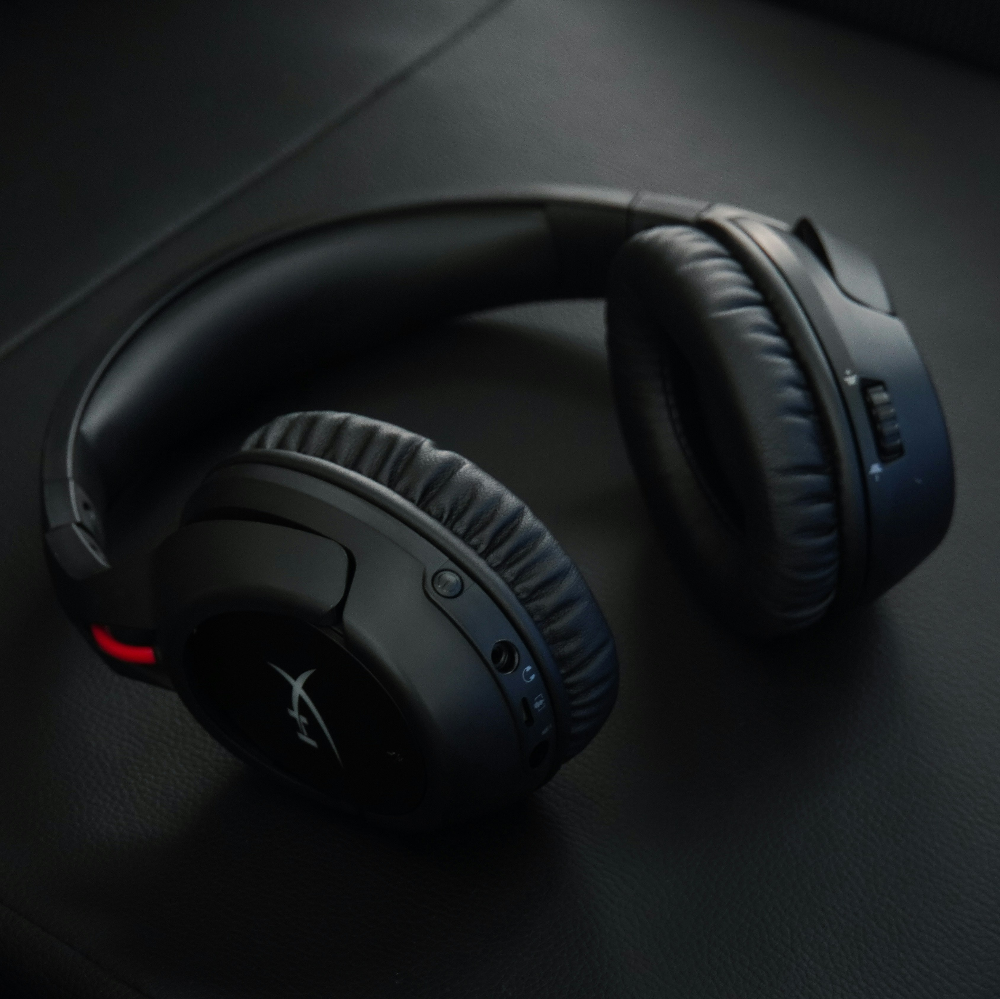

Sound quality, mic clarity, comfort, pros/cons, and whether it’s worth your money.
The Razer BlackShark V2 Pro (2024/2025 Edition) continues to dominate competitive gaming in 2026. With ultra-clear audio, a broadcast-grade microphone, and unmatched comfort, it’s the go-to headset for pros in Valorant, Apex, CS2, and Fortnite.
Most gaming headsets boost bass and muddy the mids. The BlackShark V2 Pro uses Titanium 50mm drivers tuned for competitive clarity — footsteps, reloads, and positional cues sound razor sharp.
With a 4.8-star average, players praise the comfort, mic quality, and competitive sound tuning. The only critique is the premium price — but most say it’s worth it for long sessions and ranked play.
| Feature | Details |
|---|---|
| Drivers | 50mm Titanium |
| Connectivity | 2.4GHz HyperSpeed Wireless |
| Mic | Detachable cardioid (broadcast-grade) |
| Battery Life | Up to 70 hours |
| Weight | 320g |
| Noise Isolation | Passive, closed-back |
The Razer BlackShark V2 Pro remains the top gaming headset of 2026. Its combination of comfort, mic quality, and competitive sound tuning makes it unbeatable for ranked players and esports fans. If you want the clearest footsteps and best mic in the game, this is the one.
Upgrade your audio with the most competitive gaming headset of 2026.
Check Price on Amazon